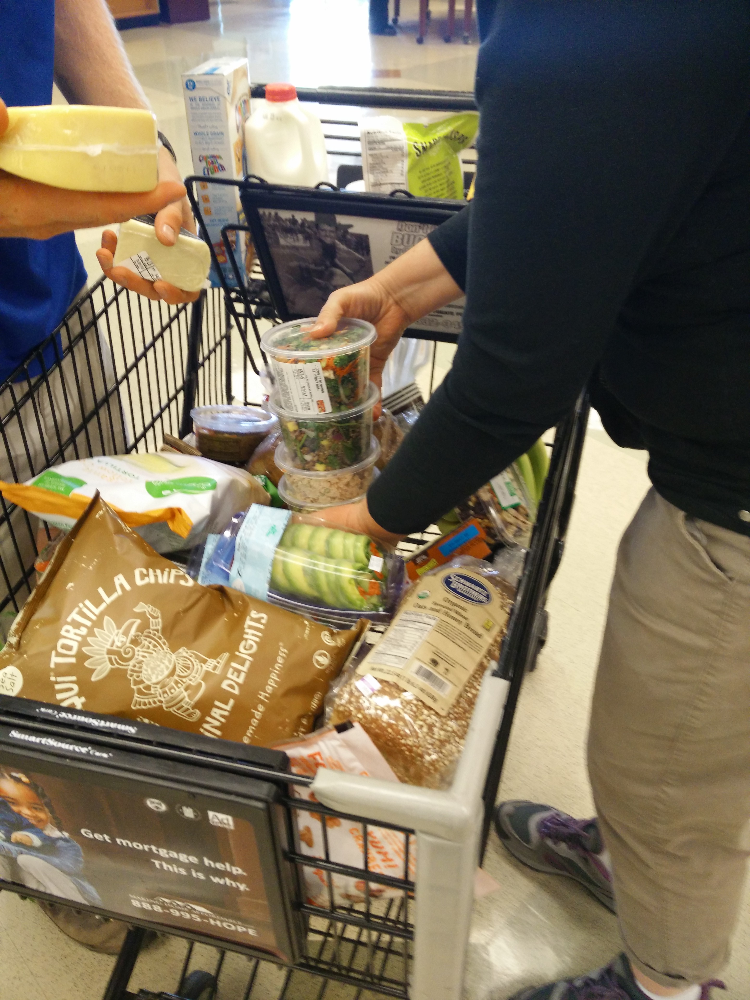

Natural Born Kissers
Stan Lee never left. I'm afraid his mind is no longer in mint condition. Oh, everything looks bad if you remember it.
Oh, a *sarcasm* detector. Oh, that's a *really* useful invention!
And now, in the spirit of the season: start shopping. And for every dollar of Krusty merchandise you buy, I will be nice to a sick kid. For legal purposes, sick kids may include hookers with a cold. Oh, everything looks bad if you remember it.
You don't like your job, you don't strike. You go in every day and do it really half-assed. That's the American way.
I will be nice to a sick kid. For legal purposes, sick kids may include hookers with a cold.
This is just a placeholder page which should be replaced with real content.
Mr. Plow
Well, he's kind of had it in for me ever since I accidentally ran over his dog. Actually, replace "accidentally" with "repeatedly" and replace "dog" with "son." Marge, just about everything's a sin. Y'ever sat down and read this thing? Technically we're not supposed to go to the bathroom.
Human contact: the final frontier. Your guilty consciences may make you vote Democratic, but secretly you all yearn for a Republican president to lower taxes, brutalize criminals, and rule you like a king! I can't go to juvie. They use guys like me as currency. I was saying "Boo-urns."
Born I.D.
The Internet King? I wonder if he could provide faster nudity… Aaah! Natural light! Get it off me! Get it off me! I don't like being outdoors, Smithers. For one thing, there's too many fat children. The Internet King? I wonder if he could provide faster nudity… Books are useless! I only ever read one book, "To Kill A Mockingbird," and it gave me absolutely no insight on how to kill mockingbirds! Sure it taught me not to judge a man by the color of his skin…but what good does *that* do me?
- Can't you people take the law into your own hands? I mean, we can't be policing the entire city!
- Marge, just about everything's a sin. Y'ever sat down and read this thing? Technically we're not supposed to go to the bathroom.
- Fame was like a drug. But what was even more like a drug were the drugs.
I am not a crackpot. "Thank the Lord"? That sounded like a prayer. A prayer in a public school.
Here's to alcohol, the cause of — and solution to — all life's problems.
Oh, a *sarcasm* detector. Oh, that's a *really* useful invention!
And now, in the spirit of the season: start shopping. And for every dollar of Krusty merchandise you buy, I will be nice to a sick kid. For legal purposes, sick kids may include hookers with a cold. Oh, everything looks bad if you remember it.
"Thank the Lord"? That sounded like a prayer. A prayer in a public school. God has no place within these walls, just like facts don't have a place within an organized religion.
I will be nice to a sick kid. For legal purposes, sick kids may include hookers with a cold.
Oh, a *sarcasm* detector. Oh, that's a *really* useful invention!
And now, in the spirit of the season: start shopping. And for every dollar of Krusty merchandise you buy, I will be nice to a sick kid. For legal purposes, sick kids may include hookers with a cold. Oh, everything looks bad if you remember it.
I am not a crackpot. "Thank the Lord"? That sounded like a prayer. A prayer in a public school.
Here's to alcohol, the cause of — and solution to — all life's problems.
"Thank the Lord"? That sounded like a prayer. A prayer in a public school. God has no place within these walls, just like facts don't have a place within an organized religion.

I am not a crackpot. "Thank the Lord"? That sounded like a prayer. A prayer in a public school.
Here's to alcohol, the cause of — and solution to — all life's problems.
Oh, a *sarcasm* detector. Oh, that's a *really* useful invention!
And now, in the spirit of the season: start shopping. And for every dollar of Krusty merchandise you buy, I will be nice to a sick kid. For legal purposes, sick kids may include hookers with a cold. Oh, everything looks bad if you remember it.